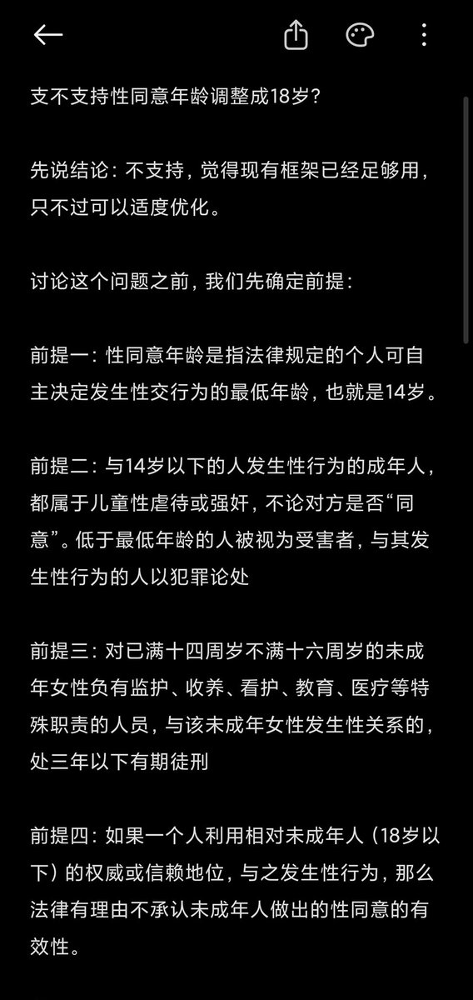
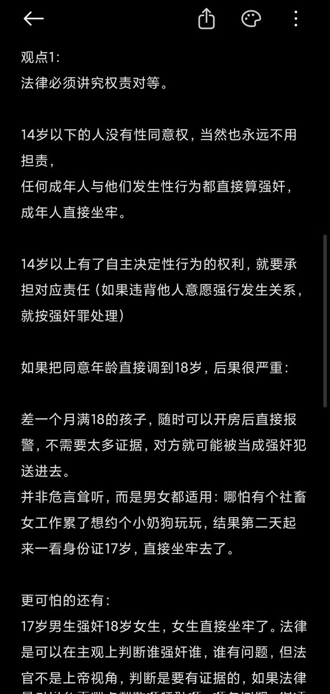
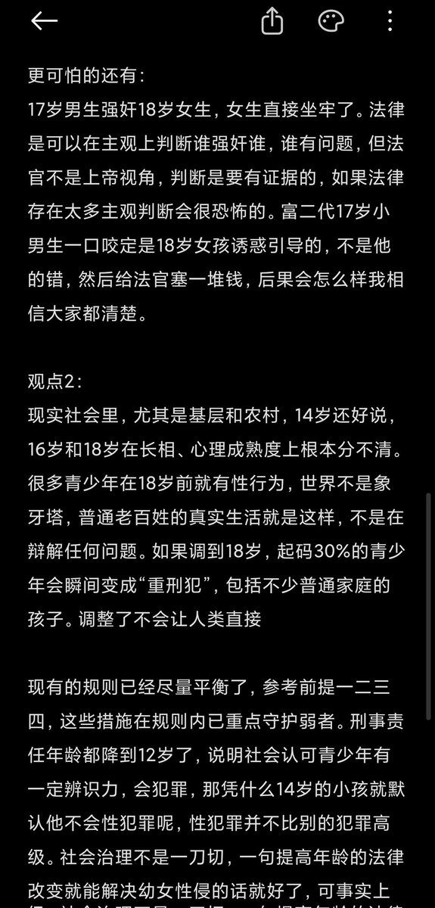
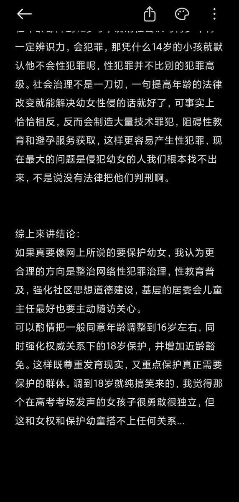

RT @neko_ruyue: 真的难以评价，提高性同意年龄和女权主义，保护女童根本没有任何关系，只有那个勇敢发声的态度值得点赞，至于发声的内容全都是狗屁。
有点社会学常识的人都知道，我们根本不是没有法律没有东西给那些强奸犯定罪，而是根本找不到他们，都隐藏在权利结构下了，提高年…

有点社会学常识的人都知道，我们根本不是没有法律没有东西给那些强奸犯定罪，而是根本找不到他们，都隐藏在权利结构下了，提高年…




真的难以评价，提高性同意年龄和女权主义，保护女童根本没有任何关系，只有那个勇敢发声的态度值得点赞，至于发声的内容全都是狗屁。
有点社会学常识的人都知道，我们根本不是没有法律没有东西给那些强奸犯定罪，而是根本找不到他们，都隐藏在权利结构下了，提高年龄只会成为14岁-18岁的罪犯的温床。 https://t.co/EBExenaEBH
有点社会学常识的人都知道，我们根本不是没有法律没有东西给那些强奸犯定罪，而是根本找不到他们，都隐藏在权利结构下了，提高年龄只会成为14岁-18岁的罪犯的温床。 https://t.co/EBExenaEBH